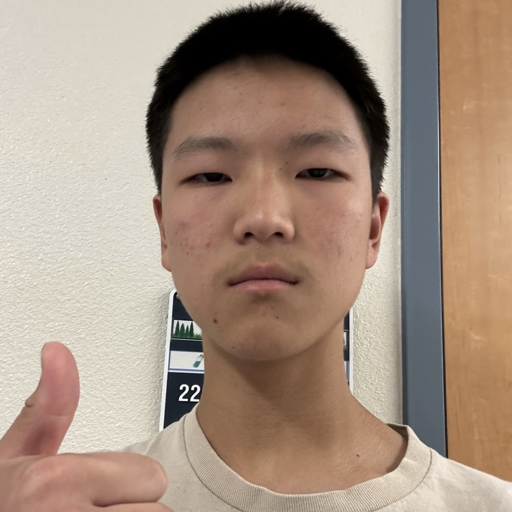
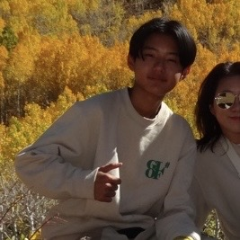
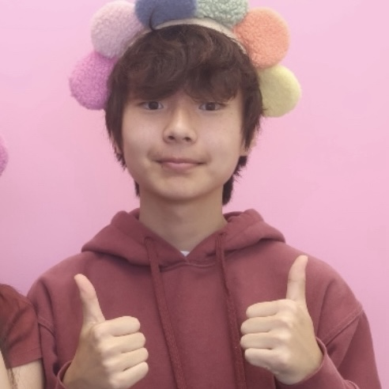
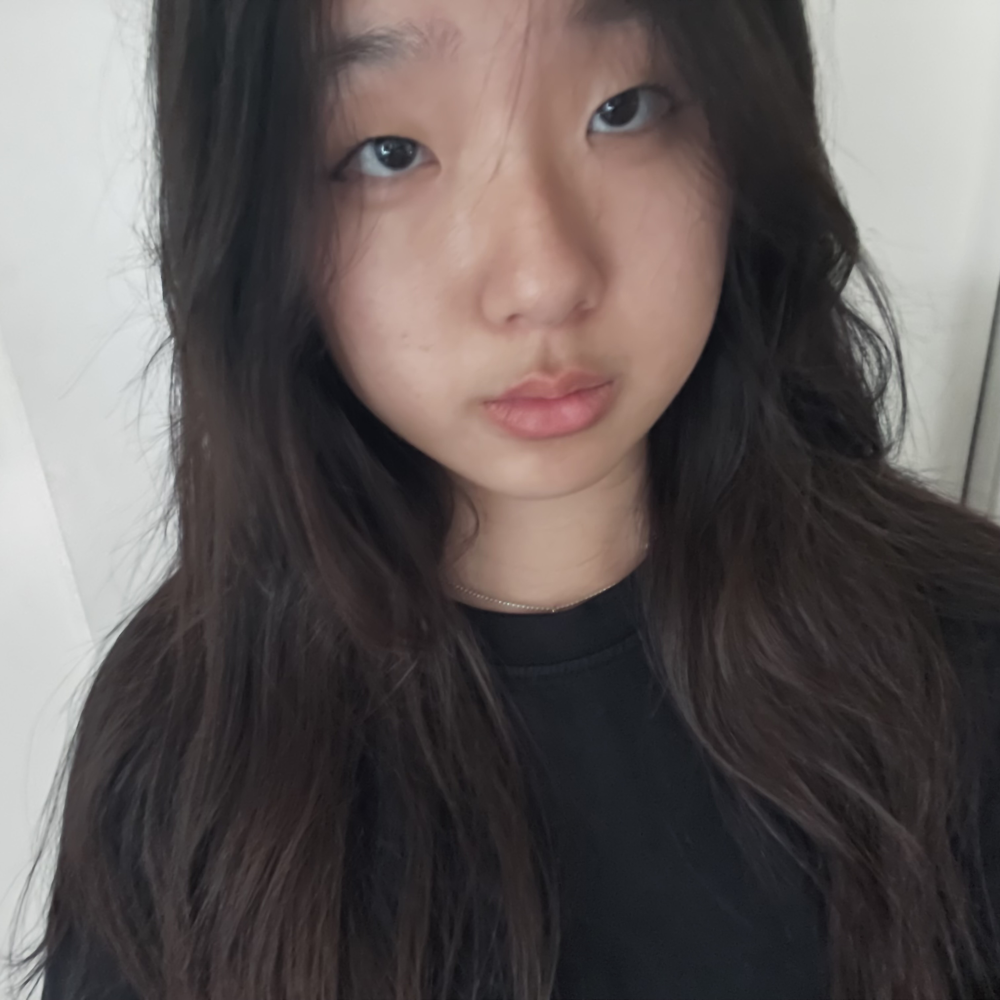
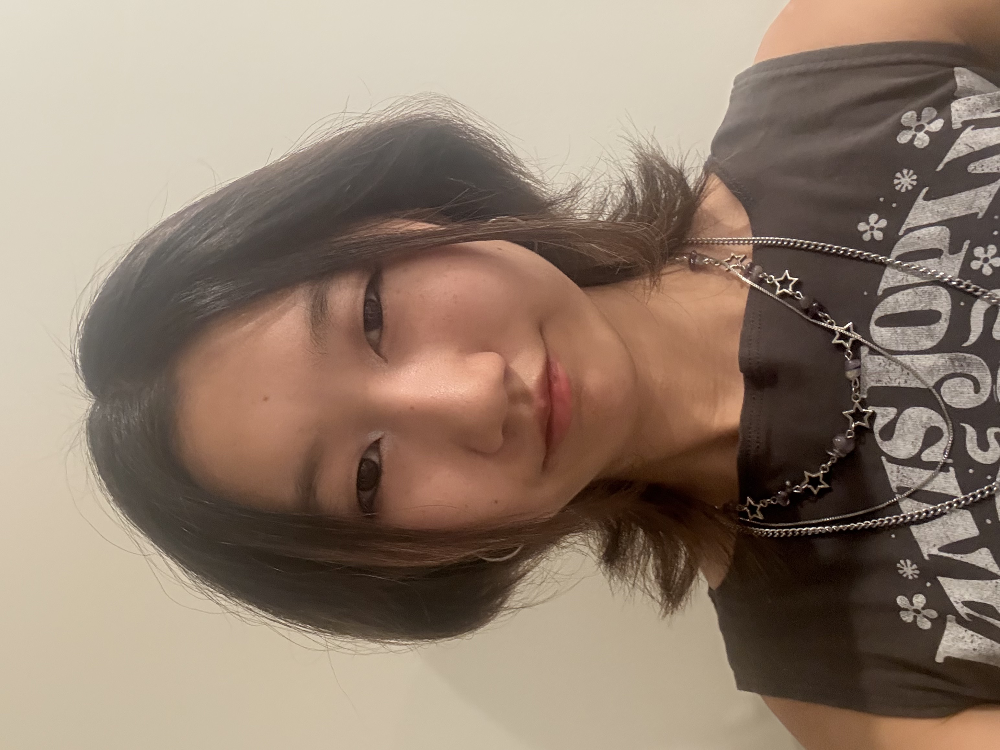

Our Story & Founder

Tevyn Yong
Founder, Product Management
Homemade Delights was started because when I was in middle school, I had many personal friends who struggled with mental health problems. While they were suffering, they were not able to get the help that they needed. So, Homemade Delights was created to reach out and offer support to people who are in need of it. We want to build a community where asking for help is as easy as sharing a cookie.
Meet The Rest of Our Team

Brandon Baek
Co-Founder, Marketing & Outreach
I joined HD because mental health has always seemed like a vital portion of everyone's lives that many neglect. Seeing friends, family members, and even me go through the world of mental health has really inspired me to help others.

Seonho Kim
Co-Founder, Finance & Sales
By joining HD, I wanted to learn more about causes, effects, and ways to build better mental health as I go about my life, while also moving for awareness and change in this field.

Eliana Park
Team Member
I joined HD because I loved the idea of helping people struggling with mental health. I’m able to understand the importance of mental health, and I want to do my best to be able to help and spread awareness.

Leah Shin
Team Member
I joined HD because I’ve always had a passion for mental health—having struggled with it myself and watching many of my friends struggle with it as well has made me want to help others with their mental health.
Our Journey in Photos
A glimpse into our events, baking sessions, and community moments. Click any photo to see it larger.


How We Make an Impact
Our mission is multifaceted. We focus on direct action, education, and financial support to make the greatest possible impact on mental health awareness.
- Spreading Awareness on Mental Health
- Posting Educational Social Media Content
Additionally, all our profits are donated to incredible organizations on the front lines of mental health and community support, including:
- Rise Above the Disorder
- 988 Hotline
- Mental Health of America
- Our Third Place
- Sunrise Counseling Community Center
- Miracle Mile